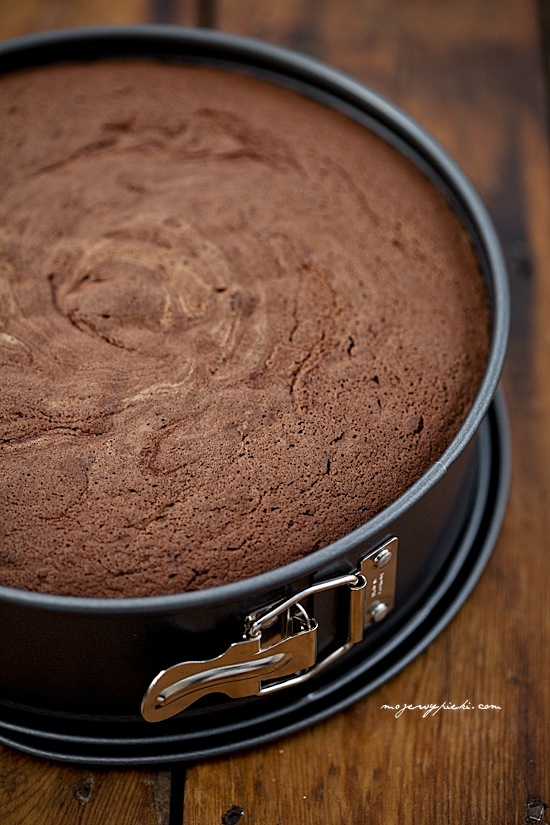

O czym jest ta strona

Na stronie można znależć wiele przepisów na każdą okazje. Sposób ich wykonania jest dosyć prosty, wszystkiego się tu dowiesz.
Oferujemy również ciasta na zamówienia, więc jeśli będziesz zainterowasny z kontaktuj się znami.
Kontakt